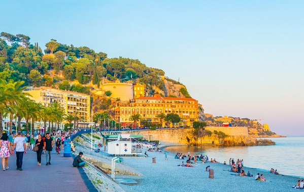

Прилет в Ниццу из вашего города. Для туристов из Украины
рекомендуем рейс Lufthansa (Киев 09:20 - Цюрих 11:15,
Цюрих 12:50 - Ницца 14:05 - рейсы LX2291/568). Вдыхая ни
с чем не сравнимый аромат Лазурного берега, мы отправляемся
в центр Ниццы. Размещение в отеле.
Выезжаем на невероятно красивое действие - ночной карнавал
в Ментоне (NIGHT-TIME PARADES проходит по адресу Promenade
du soleil).
Ночлег....
Карнавалы Франции
17/02/2022 - 24/02/2022
(8 дней)
Особенности маршрута
1 день: Прилет в Ниццу. Ночной карнавал в Ментоне. Ночлег в Ницце.
2 день: Эз. Парфюмерный дом Фрагонар. Монте-Карло. Ночлег в Ницце.
Завтрак.
После утреннего кофе на набережной, выезд на экскурсию «Жемчужины Лазурного Берега». Сперва мы посетим Эз, одну из столиц парфюмерии. Во время экскурсии по фабрике Фрагонар (Fragonard) узнаем все секреты парфюмеров, приобретем оригинальную продукцию. Далее, по узким улочкам городка поднимемся в парк экзотических растений. После спускаемся в гламурный Монако. Особенно хорошо в этом месте вечером. Экскурсия по центру.
Возвращение в отель. ...
После утреннего кофе на набережной, выезд на экскурсию «Жемчужины Лазурного Берега». Сперва мы посетим Эз, одну из столиц парфюмерии. Во время экскурсии по фабрике Фрагонар (Fragonard) узнаем все секреты парфюмеров, приобретем оригинальную продукцию. Далее, по узким улочкам городка поднимемся в парк экзотических растений. После спускаемся в гламурный Монако. Особенно хорошо в этом месте вечером. Экскурсия по центру.
Возвращение в отель. ...

3 день: Антиб. Ницца (дневной и вечерний карнавалы). Ночлег в Ницце.
Завтрак.
Особая атмосфера царит в Провансе на рынках. Именно по этому мы отправляемся в субботний Антиб. Сегодня это милый, молодежный город, но связь с историей здесь чувствуется. Пройдя сквозь крепостную стену, оказываемся в старом городе. Каждые выходные здесь проходит атмосферный рынок. Крестьяне со всех округ привозят свежие сыры, колбасы, оливки, выпечку, морепродукты. Мы обязательно устроим мини-пикник с французским вином и устрицами, а также продегуструем абсент в любимом баре Ван Гога.
Возвращение...
Особая атмосфера царит в Провансе на рынках. Именно по этому мы отправляемся в субботний Антиб. Сегодня это милый, молодежный город, но связь с историей здесь чувствуется. Пройдя сквозь крепостную стену, оказываемся в старом городе. Каждые выходные здесь проходит атмосферный рынок. Крестьяне со всех округ привозят свежие сыры, колбасы, оливки, выпечку, морепродукты. Мы обязательно устроим мини-пикник с французским вином и устрицами, а также продегуструем абсент в любимом баре Ван Гога.
Возвращение...
4 день: Виллы Ротшильдов в Вильфранше. Карнавал в Ментоне. Ночлег в Ницце.
Завтрак.
Сперва мы отправляемся на мыс Сен-Жан-Кап-Ферра, что в пригороде Ниццы. В начале 20го века, баронессой Беатрисой Ротшильд здесь была построена вилла. Прогулявшись по залам мы попадаем в ботанический сад. Сюда часто приезжают молодожены на фотосессию. По берегу моря мы едем в сторону Италии. В городке Ментон мы попадаем на дневной парад цитрусовых - GOLDEN FRUIT PARADES. Десятки украшенных повозок с артистами в экзотических нарядах, под зажигательную музыку будут проезжать вдоль трибун....
Сперва мы отправляемся на мыс Сен-Жан-Кап-Ферра, что в пригороде Ниццы. В начале 20го века, баронессой Беатрисой Ротшильд здесь была построена вилла. Прогулявшись по залам мы попадаем в ботанический сад. Сюда часто приезжают молодожены на фотосессию. По берегу моря мы едем в сторону Италии. В городке Ментон мы попадаем на дневной парад цитрусовых - GOLDEN FRUIT PARADES. Десятки украшенных повозок с артистами в экзотических нарядах, под зажигательную музыку будут проезжать вдоль трибун....
5 день: Канны. Фестиваль Мимозы в Монделье ля Напуль. Канны. Ночлег в Ницце.
Завтрак.
Проезд по побережью французской ривьеры в город Монделье ля Напуль. Нас привлекает не столько сам город, сколько склоны гор над ним. Т.к. именно здесь в феврале зацветает мимоза. Совершим очень приятный хайкинг, подышим свежим воздухом, сделаем незабываемые фото и отправимся в Канны. Это мировая киностолица, один из самых фешенебельных курортов. Самой яркой городской достопримечательностью является набережная Круазетт. Круазетт берет свое начало возле известного казино Палм Бич и ведет...
Проезд по побережью французской ривьеры в город Монделье ля Напуль. Нас привлекает не столько сам город, сколько склоны гор над ним. Т.к. именно здесь в феврале зацветает мимоза. Совершим очень приятный хайкинг, подышим свежим воздухом, сделаем незабываемые фото и отправимся в Канны. Это мировая киностолица, один из самых фешенебельных курортов. Самой яркой городской достопримечательностью является набережная Круазетт. Круазетт берет свое начало возле известного казино Палм Бич и ведет...
6 день: Сен-Поль-де-Ванс - винная дегустация. Грасс - парфюмерная фабрика Галимар. Ночлег в Ницце.
Завтрак.
Сегодня у нас с вами день живописных горных городков. Первая остановка в Сен-Поль-де-Ванс. Это небольшой горный городок. Славится уютными улочками с сувенирами. Когда-то здесь любили отдыхать парижские художники, расплачиваясь за ночлеги и еду своими картинами. Так что хозяин отеля “золотая голубка” оказался очень предусмотрительным и оставил целое состояние своим наследникам. Здесь можно увидеть картины Утрилло, Вламинк, Дюфи, Боннар, Сутин, Пикассо, Модильяни, Кокто, Шагала.
Далее...
Сегодня у нас с вами день живописных горных городков. Первая остановка в Сен-Поль-де-Ванс. Это небольшой горный городок. Славится уютными улочками с сувенирами. Когда-то здесь любили отдыхать парижские художники, расплачиваясь за ночлеги и еду своими картинами. Так что хозяин отеля “золотая голубка” оказался очень предусмотрительным и оставил целое состояние своим наследникам. Здесь можно увидеть картины Утрилло, Вламинк, Дюфи, Боннар, Сутин, Пикассо, Модильяни, Кокто, Шагала.
Далее...
7 день: Ницца - свободный день

Завтрак.
Сегодня Вы можете провести день так, как Вам того захочется и во всю насладиться Ниццей.
А мы вам предлагаем неспешную прогулку по городу: Английская Набережная, «старый город» с цветочным рынком, Дворцом Правосудия, храмом Святого Репарата, Средиземноморским дворцом и домом, где жил Николо Паганини. Пешеходная экскурсия по городу, во время которой мы поднимемся на на одну из красивейших панорамных площадок города, холм Шато, откуда открывается вид на «Бухту Ангелов», прогуляемся по...
А мы вам предлагаем неспешную прогулку по городу: Английская Набережная, «старый город» с цветочным рынком, Дворцом Правосудия, храмом Святого Репарата, Средиземноморским дворцом и домом, где жил Николо Паганини. Пешеходная экскурсия по городу, во время которой мы поднимемся на на одну из красивейших панорамных площадок города, холм Шато, откуда открывается вид на «Бухту Ангелов», прогуляемся по...
8 день: Завтрак. Трансфер в аэропорт. Вылет в Киев.
Завтрак.
Выселение из отеля.
Трансфер в аэропорт Ниццы. Вылет домой.
Для туристов из Украины рекомендуем рейс Lufthansa (Ницца 10:10 -
Цюрих 11:25, Цюрих 12:55 - Киев 16:35 - рейсы LX563/2290).
Турлидер